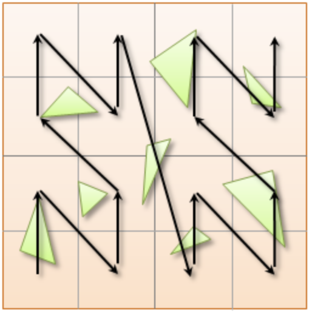

.pdf
.pdf
Bounding Volume Hierarchy
1. Introduction
Ray-Tracing is a well-known method used in many fields. In order to render physically realistic scenes, or in our case mathematical results, numerous rays must be traced to get plausible outcomes. The goal would be to accelerate the light transport simulation thanks to efficient sampling techniques, leveraging hardware architecture, or by rearranging scene primitives into an efficient spatial data structure. Naïvely, we could compute the ray/scene interactions by testing all scene primitives, which is prohibitively expensive since we rely on fine-grained meshes.
BVH has become popular in many use cases, in particular when using ray-tracing, for numerous reasons such as:
-
predictable memory footprints: The memory complexity is linearly bounded to the number of scene primitives since each is only referenced once in the tree, so that the BVH contains at most \(2n-1\) nodes for a binary BVH when dealing with \(n\) primitives / leafs. Even in the case of spatial splits where primitives can be referred to multiple times, the number of occurrences can still be controlled to a certain extent.
-
efficient query: Using a BVH, we can efficiently prune branches that do not intersect a given ray, and thus reduce the time complexity from linear to logarithmic on average. This will be tested in the benchmark sections.
-
scalable construction: There are various BVH construction algorithms, ranging from very fast algorithms to complex algorithms that provide highly optimized BVHs.
-
dynamic geometry: since fast BVH construction is available, they are suitable for use with dynamic geometries
Quality of a BVH: The quality of such a structure corresponds to the ray tracing speed in millions of rays cast per second
BVH Node: Contains information such as child node pointers, the number of leaves, and bounding boxes. Hence, the memory consumption of a BVH drastically increases with the scene’s size growth.
1.1. Definition
A visual definition of a BVH structure using Axis-Aligned Bounding-Boxes.

In this context, N1 would be the bounding volume for the entire object or scene, N2 and N3 would be those respectively containing N4 and N5, and so on, until we reach the leaves of the tree, which are directly the bounding boxes of the primitives.
2. Construction Methods


2.1. Recursive Top-Down Construction
In the code snippet below, written by Luca Berti, a recursive top-down construction algorithm was proposed for further improvements. We can see that he adopts a recursive build function, which is called to create each node of the tree: if there is only one primitive, then a leaf is build, else, an internal node is created and the build function is called recursively on the left and right child nodes. Here is the proposed implementation:
BVHNode * recursiveBuild(BVHNode * current_parent, int cut_dimension, int start_index_primitive, int end_index_primitive, std::vector<int> &orderedPrims)
{
LOG(INFO) <<fmt::format("cut dimension {}, start index primitive {}, end index primitive {}",cut_dimension,start_index_primitive,end_index_primitive);
Eigen::VectorXd M_bound_min_node(nDim),M_bound_max_node(nDim);
BVHNode * node = new BVHTree::BVHNode();
M_bound_min_node = M_primitiveInfo[start_index_primitive].M_bound_min;
M_bound_max_node = M_primitiveInfo[start_index_primitive].M_bound_max;
for (int i = start_index_primitive+1; i < end_index_primitive; ++i)
{
M_bound_min_node = node->newBoundsMin(M_bound_min_node,M_primitiveInfo[i].M_bound_min);
M_bound_max_node = node->newBoundsMax(M_bound_max_node,M_primitiveInfo[i].M_bound_max);
}
auto mid = (start_index_primitive + end_index_primitive) / 2;
std::nth_element(&M_primitiveInfo[start_index_primitive], &M_primitiveInf[mid], &M_primitiveInfo[end_index_primitive-1]+1,
[cut_dimension](const BVHPrimitiveInfo &a, const BVHPrimitiveInfo &b)
{
return a.M_centroid[cut_dimension] < b.M_centroid[cut_dimension];
});
int nPrimitives = end_index_primitive - start_index_primitive;
if (nPrimitives == 1)
{
// Create a leaf, since there is only one primitive in the list
int firstPrimOffset = orderedPrims.size();
for (int i = start_index_primitive; i < end_index_primitive; ++i)
{
int primNum = M_primitiveInfo[i].M_primitiveNumber;
orderedPrims.push_back(primNum);
}
node->buildLeaf(current_parent,firstPrimOffset, nPrimitives, M_bound_min_node,M_bound_max_node);
return node;
}
else{
// Create a node, since there are at least two primitives in the list
node->buildInternalNode(current_parent,(cut_dimension+1)%nDim,
recursiveBuild( node, (cut_dimension+1)%nDim, start_index_primitive, mid, orderedPrims),
recursiveBuild( node, (cut_dimension+1)%nDim, mid, end_index_primitive, orderedPrims));
}
return node;
}This function is responsible for constructing the BVH tree from the primitives. It’s called recursively and each time it either creates a leaf node if there’s only one primitive left, or an internal node with two child nodes. The primitives are split by choosing a cutting dimension and sorting them by their centroids along this dimension, and then the data is divided into two equally sized parts, for each of which a new node is created.
The cutting dimension is cycled between 0, 1, 2 (representing the x, y, and z axes in a 3D space) by using (cut_dimension+1)%nDim in the recursive calls. This is the main "Divide and Conquer" idea behind this top-down construction algorithm.
It then sorts the primitives by their centroids along the cutting dimension, using the std::nth_element function, which partially sorts the primitives so that the element at the mid index will be in the place it would be in a fully sorted array, and all elements before it are less than or equal to the elements after it. The comparison function [cut_dimension](const BVHPrimitiveInfo &a, const BVHPrimitiveInfo &b) { return a.M_centroid[cut_dimension] < b.M_centroid[cut_dimension]; } is used to sort the elements based on their centroids along the cutting dimension.
Finally, the data is divided into two equally sized parts when calculating the midpoint of the primitives' indexes.
Other splitting algorithms can be used, such as the Surface Area Heuristic (SAH) or the Middle Split Heuristic (MSH), which are listed and explained in the Spatial Splits section.
2.2. Bottom-Up Construction
Instead of starting with all scene primitives in one cluster and recursively splitting them, bottom-up construction algorithms start with each primitive in its own cluster and recursively merge the closest pairs. This is done either until the desired number of clusters is reached, or each cluster contains a maximum number of primitives. The clusters are then used as the primitives for the next level of the tree. This process is repeated until the root node is reached.
ADD COMPLETE DEFINITION AND WHY IT WONT BE USED
Below is an example of a bottom-up construction algorithm:
Introduced by Walter et al., bottom-up construction by agglomerative clustering proposes to start with all scene primitives considered as individual clusters and recursively merges the closest pairs (the distance function being for example the surface area of a bounding box enclosing both clusters). In general, these trees tend to have lower global costs, but the construction is more time-consuming.
3. Clustering
3.1. Agglomerative Clustering
The major inconvenience when using bottom-up algorithms is that the upper nodes are poorly locally optimized and thus the research for the closest neighbor can be very costly. To prevent this, Gu et al proposed to recursively perform spatial median splits based on Morton codes until each subtree contains less than a chosen number of clusters. The clusters are merged using agglomerative clustering. Using this at all levels in the BVH, even the top level nodes' split will be locally optimized.
Meister and Bittner proposed a GPU-based algorithm using k-means clustering: scene primitives are subdivided into k clusters using k-means clustering. When done recursively, a k-ary BVH is built, which can also be converted to a binary tree by constructing intermediate levels using agglomerative clustering.
3.2. Parallel locally-ordered clustering on GPU
Introduced by Meister and Bittner, the key observation is that the distance functions have a non-decreasing property, meaning that once we found two mutually corresponding nearest neighbors, we can immediately merge their clusters since no other closer one will be found. The clusters are kept sorted along the Morton Curve, finding the nearest cluster by searching both sides of the sorted cluster array, testing a predefined number of clusters. Since it does not rely on distance matrices, it is GPU-friendly, and only a small number of iterations are needed to build the whole tree.
3.3. Linear BVH (LBVH)
The hierarchical nature of the BVH prevents a straightforward parallelization of the construction algorithm. But now, the BVH construction can be reduced to sorting scene primitives along the Morton curve (the order is given by Morton codes of fixed length, 32 or 64 bits), and using optimized sorting algorithms such as the radix sort, it can be done in 2n-1 time. The Morton code implicitly encodes a BVH constructor by spatial median splits.
3.4. Morton Curves
ADD EXPLANATION ON MORTON CODE AND CURVES
|
Morton Curves Morton curves map multidimensional data to one dimension while preserving the locality of the data points. They can be considered as a special 1-dimensional path traversing multidimensional data. Displayed below is an example of a Z-order curve (also known as a Morton curve) in a two-dimensional plane.

|
These can be defined thanks to various algorithms presented on NVIDIA’s website.
4. Construction Optimization
4.1. Spatial Splits
Performing the spatial splits in an optimized way is crucial to the performance of the BVH. In fact, this is deeply related to the BVH’s layout, which is the way the BVH is stored in memory, hence having a strong impact on it’s construction time, the resulting quality of the BVH, and the traversal performance. The first step is to choose the splitting algorithm, and more importantly the separating axes.
4.1.1. Longest Axis
One straightforward approach is to choose the axis with the longest extent of the bounding volume as the separating axis. This can help effectively divide the scene along its largest dimension, potentially leading to more balanced partitions.
4.1.2. Axis Cycling
Another method involves cycling through the three axes (X, Y, Z) and selecting the next axis in a cyclic manner for each spatial split. This approach ensures that the splitting axes are evenly distributed and can help maintain overall balance in the BVH construction. This is the approach proposed by Luca Berti, presented in the original code of this project, like seen during the call to the recursive build function:

The 2nd value representing the cutting dimension is cycled between 0, 1 and 2, representing the x, y and z axes of our 3 dimensional euclidean space, by using (cut_dimension+1)%nDim in the recursive calls. At each call, it is incremented by 1, enabling a different splitting axis to be used at each level of the tree. After choosing the splitting axis, the median value along that axis is computed and used as the splitting position, also know as a median cut, discussed right below.
4.1.3. Median Cut
The median cut strategy involves computing the median value along a specific axis and using it as the splitting position. This method aims to divide the scene into two halves containing an equal number of objects, which can help achieve good load balancing. This is implemented in the following line of the recursive build method, when calling the std::nth_element function:

4.2. Cost Functions
The quality of a particular BVH can be estimated in terms of the expected number of operations needed for finding the nearest intersection with a given ray. It can be estimated thanks to the recurrence equation:
4.2.1. Surface Area Heuristic (SAH)
As mentioned earlier, the SAH criterion can also be used to determine the separating axis. It evaluates the cost of each axis based on the surface area of the resulting bounding volumes and chooses the axis with the lowest cost.
Using the surface area heuristic (SAH), we can express the conditional probabilities as geometric ones, using their respective surface area to compute the ratio of the surface areas of a child node and the parent’s one:
And finally, assuming that the ray origins and directions are uniformly distributed, after unrolling we get:
Where \(N_i\) and \(N_l\) respectively denote interior and leaf nodes of a subtree with root \(N\). The problem of finding an optimal BVH is believed to be NP-hard. But these assumptions are unrealistic and thus several corrections have been proposed.
ADD BENCHMARKS WHEN IMPLEMENTED
4.3. Parallelization
4.3.1. Parallel on-demand construction algorithm
Introduced by Vinkler et al., it’s a parallel on-demand construction on the GPU, building only those parts that are visited during the traversal. Since we are using static geometries to compute our shading masks, the BVH should only be built once and used for several traversals. Despite its logical simplicity, it would be great being able to leverage the different memories available on the GPU to store the BVH in a more efficient way, for example on the constant memory, which is a high performance read-only memory. The storage methods will be discussed in the BVH Layout section.
5. BVH Layout
5.1. Wide BVHs
ADD PROPER DEFINITION OF WIDE BVHs
BVHs poorly adapt to scenes with overlapping primitives of non-uniform sizes, typically difficult to separate.
The use of wide BVHs implies efficient memory usage as they contain significantly fewer interior nodes than binary ones, but this also induces leveraging parallel computing resources using SIMD/SIMT (single instruction multiple data / threads) units by testing one ray against multiple bounding volumes simultaneously during the traversal.
There are two classes of algorithms for building wide BVHs. The first class relies on an already existing binary BVH, which is converted to a wide BVH by discarding interior nodes. The second class directly builds a wide BVH during construction. These will not be discussed here.
5.2. Compact Representation for Memory Savings
The memory footprint of a BVH (Bounding Volume Hierarchy) grows substantially with the expansion of the scene’s scale. This can give rise to significant complications when executing traversal algorithms on memory-constrained GPUs, which possess limited memory resources at their disposal. In order to address this issue, we can try minimizing the information’s size contained in each node, such as compressing complex geometric data using bounding boxes and vertex coordinates with reduced precision or even representing mesh triangle connectivity using triangle strips.
Triangle Strips
Triangle strips refer to a method used for simplifying the representation of polygonal meshes. In order to reduce the computational costs, better management of the mesh data can lead to significant efficiency improvements. A triangle strip is a series of connected triangles that share vertices, allowing for more efficient memory usage. By storing the shared vertices of these connected triangles, the overall number of vertices needed to define the triangles can be significantly reduced, hence rendering more efficiently and using less memory.
5.2.1. Reduced Precision
One way of reducing precision would be the use of Hierarchical Mesh Quantization, using a single unified data structure for the BVH’s and triangle’s storage, achieving a high compression rate by quantizing each vertex of the triangle in a leaf node as a local offset of the leaf bounding box.
5.2.2. Triangle Connectivity
Ray-Strips use a two-level data structure (meaning, for example, that one type of data structure is used as the Top-Level Acceleration Structure, each leaf containing, for example, strips or another BVH). Several algorithms can be used to generate the strips (SAH-aware generator such as Strip-RT, generating longer strips with higher spatial coherence, HMQ compresses vertex connectivity by storing short indexed strips containing up to a certain threshold of triangles in each leaf node).
5.3. The Tree’s Storage Format
After successfully constructing the tree in an optimized way, it is important to note that both optimizing the traversal code and the tree’s representation itself are very important to see an increase in performance. Two obvious ways of dealing with that are to minimize the size of the data structures involved and to rearrange the data in a more cache-friendly way to reduce time for the search of relevant information (for example, it would be better to structure the array holding the pointers in such a way to minimize the time spent during traversal).
5.3.1. Array Representation
Let’s look at a natural way of structuring the tree by mapping its nodes in a breadth-first level-by-level manner:
// First Level
array[0] = *(root);
// Second level
array[1] = *(root->left);
array[2] = *(root->right);
// Third level
array[3] = *(root->left->left);This way, we always know that a parent’s children can be found at positions \(2i+1\) and \(2i+2\) in the array, usually inducing wasted memory unless dealing with a complete tree.
5.3.2. Preorder Traversal Order
When preordering them in traversal order, the left child will always follow its parent, and only one link is needed to point to the right child.
// Given a tree t, outputs its nodes in preorder traversal order
// into the node array n. Call with i = 0.
int PreorderOutput(Tree *t, Tree n[], int i)
{
// Implement a simple stack of parent nodes.
// Note that the stack pointer ‘sp’ is automatically reset between calls
const int STACK_SIZE = 100;
static int parentStack[STACK_SIZE];
static int sp = 0;
// Copy over contents from tree node to PTO tree
n[i].nodeData = t->nodeData;
// Set the flag indicating whether there is a left child
n[i].hasLeft = t->left != NULL;
// If node has a right child, push its index for backpatching
if (t->right) {
assert(sp < STACK_SIZE);
parentStack[sp++] = i;
}
// Now recurse over the left part of the tree
if (t->left)
i = PreorderOutput(t->left, n, i + 1);
if (t->right) {
// Backpatch the right-link of the parent to point to this node
int p = parentStack[--sp];
n[p].rightPtr = &n[i + 1];
// Recurse over the right part of the tree
i = PreorderOutput(t->right, n, i + 1);
}
// Return the updated array index on exit
return i;
}Flattening the tree in this way allows us to store the tree in a single array, with each node containing a pointer to its right child and a flag indicating whether it has a left child or not. This way, we can easily traverse the tree by following the right child pointers and using the left child flags to determine whether we should follow the left child or not and avoid the need for a stack and storage of 2 pointers per node (only one is necessary). This method is also cache-friendly since the nodes are stored in a linear array.
5.3.3. Cache-friendly Structures
When using modern architecture, execution time is mostly limited by cache issues when fetching data from memory. One possible way of adopting a cache-friendlier solution would be by merging the sets of binary tree nodes into a 'tri-node' containing the parent and its children, preventing it from needing internal links. Below we can see an example representing a complete 4-level binary tree with 14 internal links with a 2-level tri-node tree storing only 4 internal links. Even better, this representation can also be combined with other optimizing structures seen before.
Flattening a tri-node tree is similar to flattening a binary tree, except that we need to store the parent’s index in the array as well as the left and right child flags. The right child pointer is replaced by a flag indicating whether the parent has a right child or not, the left and parent’s one are replaced in the same manner. The root node is a special case, since it has no parent, signified by a special flag. Three new structures (GPUNode, GPURay and GPUTree) were introduced, storing only critical information for it to be of small enough size to be copied-by-value to the GPU.
6. Leveraging Ray Locality
Spatial data structures exploit the spatial locality of scene primitives. But this isn’t the only way of leveraging spatial locality. To further accelerate the whole process, we could map rays to interior nodes deeper in the tree, skipping top-level nodes. A major caveat of such methods is that there is no guarantee that the found intersection corresponds to the closest one. But when computing shading masks, the lack of distance consideration is not a drawback. Instead, we solely focus on determining whether an object is present along the path of the ray.
Another way to optimize the ray generation would be to exploit the graphics card’s instancing of objects, enabling it to create multiple copies of one object in record time. Benthin and Wald decided that, instead of tracing the rays sequentially, they would generate bounding frusta of coherent rays simultaneously harnessing the potential of a SIMD unit (as many rays in one frustum as the SIMD unit is wide).
This could be taken further, by assigning parts of a matrix to a specific block in the GPU, leveraging the constant memory and launching the frustum of rays in the respective direction defined by the block-assigned resulting matrix. This way, the rays are processed in a more coherent manner, and the GPU’s constant memory is used to its full potential. Moreover, the frustum could be instantiated directly on the GPU, and the identical rays could be transformed and translated through random values, generated by the mersene twister algorithm that can be implemented on a CUDA kernel, and therefore be naturally processed in parallel. This would result in a more efficient memory transfer, since the rays shouldn’t be transferred back to the CPU, but only the resulting intersected leaves.
ADD DETAILED EXPLANATION OF THE PROCESS AND STRUCTURES THAT WILL ARE IMPLEMENTED ON GPU
7. Conclusion
They surveyed many interesting papers varying from basic algorithms to more complex ones. When dealing with static geometries and to have an optimized algorithm, the use of top-down construction algorithms using parallelized binning with the SAH-based cost function is recommended for its ease of implementation and the multithreading capabilities alongside SIMD. Significant performance gains can be obtained when combining this method with optimized spatial splits during the construction process, more adapted to handling diagonal, overlapping, or non-uniform-sized primitives. In order to improve the BVH’s quality, optimization algorithms such as tree rotations, subtree collapsing, or insertion-based optimizations could be used.